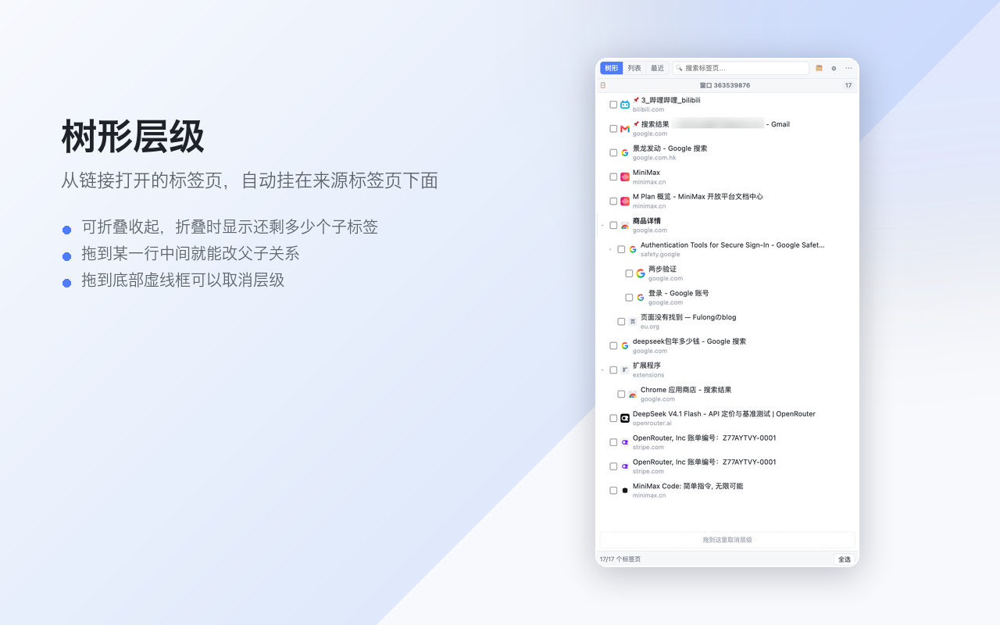
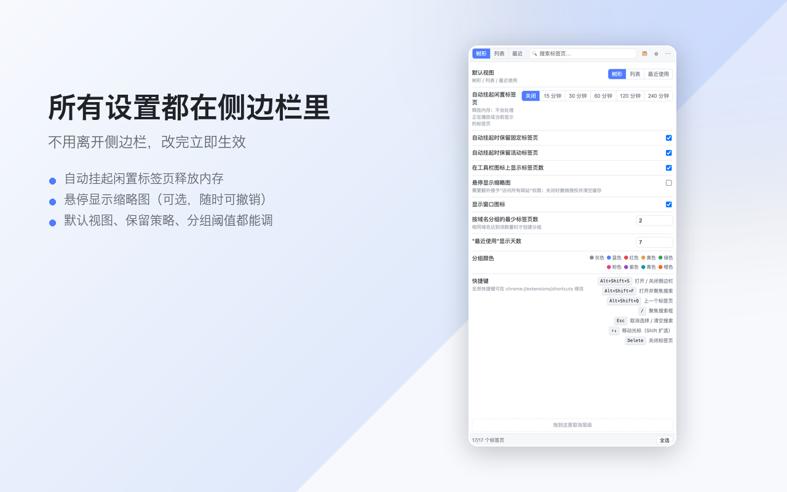
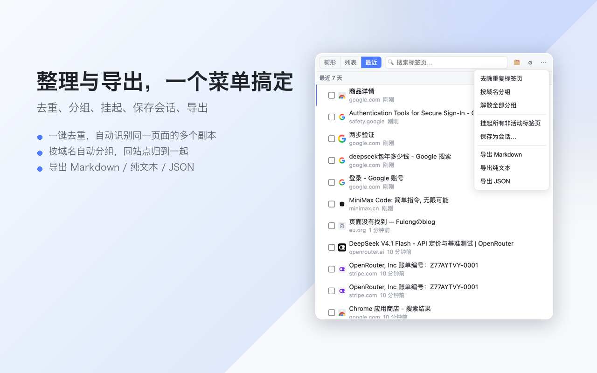

在浏览器侧边栏集中管理所有窗口的标签页 —— 树形层级、极速搜索、批量操作、去重分组、会话保存、自动挂起、拖拽排序。
无需账号 · 不上传任何数据 · 开源免费 · Chrome 114+
标签页一多就找不到、关不完、分不清。下面这些是 Tab Sidebar 做的事。
从链接打开的标签页自动挂在来源标签页下面，可折叠收起，收起时显示还剩多少个子标签。
多词同时匹配、-词 排除、"精确短语"；还能按 pinned:、dup:、grouped: 等状态过滤，按 url:、title:、group: 过滤字段。
Ctrl/⌘ 点击多选、Shift 点击选范围、Space 勾选。选中后一次关闭、搬到新窗口、加入分组、挂起、固定或复制链接。
自动识别同一页面的多个副本（忽略 utm 等追踪参数、忽略 # 锚点），保留你更需要的那一个；同站点的标签页还能自动归到一起。
排序、跨窗口移动、拖进分组、拖到窗口标题；树形视图里拖到某一行中间直接改父子层级，拖到底部虚线框取消层级。
把当前所有窗口（或选中的标签页）存成命名会话，之后一键在新窗口恢复，固定状态和分组都保留。
闲置超过 15 分钟到 4 小时的标签页自动释放内存，正在播放音频和当前正在看的永远不会被处理，随时可关。
/ 聚焦搜索、↑↓ 移动、Shift+↑↓ 扩选、Enter 切换、Delete 关闭、Esc 逐级取消。
全部界面都在侧边栏里，不打断你正在做的事。



全局快捷键可在 chrome://extensions/shortcuts 自行修改。
| 功能 | Windows / Linux | macOS |
|---|---|---|
| 打开 / 关闭侧边栏 | Alt+Shift+S | ⌘+Shift+K |
| 打开侧边栏并聚焦搜索 | Alt+Shift+F | ⌘+Shift+F |
| 切换到上一个使用过的标签页 | Alt+Shift+Q | ⌘+Shift+L |
| 聚焦搜索框 | / | |
| 取消选择 / 清空搜索 / 返回 | Esc | |
| 移动光标（Shift 扩选） | ↑ ↓ | |
| 切换标签页 / 关闭标签页 | Enter / Delete | |
不收集、不上传任何数据。扩展只在本机读取并显示浏览器已经掌握的标签页信息，所有设置和会话只存在你自己的浏览器里。没有账号、没有统计、没有广告、没有追踪。
可选的「悬停显示缩略图」需要额外授权，关闭后立即撤销；缩略图只保存在内存中，不会上传。
完整说明见 隐私政策（中英双语）。